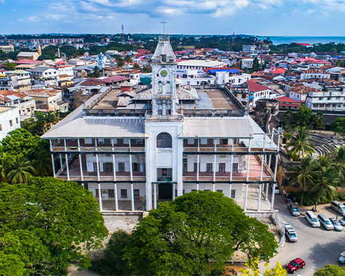
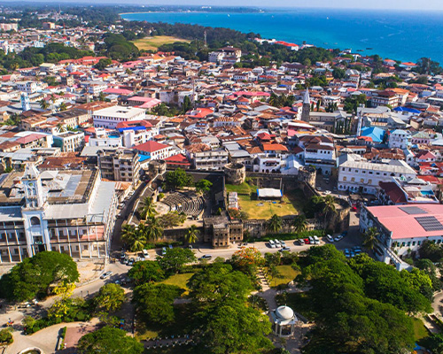
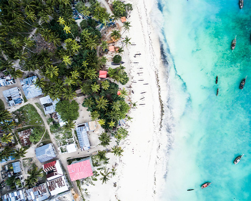
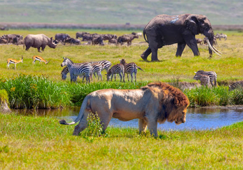

Tanzania's Best
Wildlife Safaris
Experience the raw, untamed beauty of Tanzania's iconic national parks. From the vast Serengeti plains to the dramatic Ngorongoro Crater, our wildlife safaris offer unforgettable encounters with Africa's Big Five and the world-famous Great Wildebeest Migration.
.jpg) Popular
Popular Top Rated
Top Rated
.jpg)
.jpg) Best Value
Best Value.jpg)

Africa's Highest Peak
Kilimanjaro Trekking
Conquer Mount Kilimanjaro — Africa's highest peak at 5,895m. Whether you choose the classic Marangu route or the scenic Lemosho route, our certified guides will get you to Uhuru Peak safely and unforgettably.
 Popular
Popular Top Rated
Top Rated

.jpg) Best Success
Best Success
Island Paradise
Zanzibar Holidays
Escape to the Spice Island of Africa. Zanzibar offers pristine white-sand beaches, crystal-clear turquoise waters, the historic UNESCO-listed Stone Town, spice farm tours and world-class snorkeling and diving experiences.

Popular

 Best Value
Best Value.jpg)
Short Adventures
Day Trips
Perfect for travellers with limited time. Our day trips offer incredible experiences just a few hours from Arusha and Moshi — from hot springs and waterfalls to cultural visits and national park drives.



.jpg)
.jpg)
Best of Everything
Combo Packages
Why choose one when you can have it all? Our combo packages combine the best of Tanzania — summit Kilimanjaro then explore the Serengeti, or do a safari followed by a relaxing Zanzibar beach holiday.
.jpg) Popular
Popular.jpg) Best Value
Best Value.jpg)
.jpg) Ultimate
Ultimate